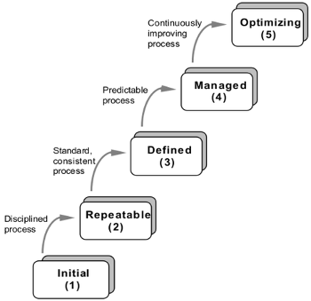

-
ECVET STEP
ECVET combines several technical components and processes into a methodological framework that forms the ECVET system. The general objectives of ECVET are targeted towards vocational training activities, facilitating transnational mobility and lifelong learning for all. The main challenge for the introduction of a common methodological framework like ECVET in the European VET environment is the broad range of bodies involved with the different functions of qualifications systems.

ECVET-STEP is addressing this challenge by introducing an innovative maturity framework and a software toolkit that any interested organisation may apply to achieve a progressive capability for supporting ECVET processes. Start using the ECVET Toolkit by visiting and interacting with each of the sections of the left toolbar!
-
Introduction
Before we begin to describe the maturity framework for progressively introducing and achieving capability for supporting mobility ECVET actions by any interested organisation, it is important to describe the main types of actors in the ECVET landscape.
Use the top bar to find out about each of the key actor categories as well as the corresponding requirements and resposibilities for functioning as such within an ECVET context.
VET Learner
Even though the scope of the ECVET Capability Maturity Framework does not directly target individual learners, it is interesting to understand the main characteristics of the central player of ECVET, i.e. the VET Learner. A VET Learner in the context of ECVET is therefore an adult person who is interested in participating in vocational education training activities in order to achieve certain learning outcomes and acquire a certified set of competences and skills. The following paragraphs present the profile of an “ideal” ECVET learner
Requirements
- Minimum training to ensure that full advantage of the experience is taken.
- Having the required documents:
- National Identity Card/Passport.
- European Health insurance.
- Medical certificate when required.
- Travel and liability insurance.
- Any authorisations required in the sending and host country.
- Sufficient knowledge of the working language.
- Legal minimum age for placements of the sending and host country.
Responsibilities- Take part in the mobility experience in an active and responsible way and do everything required at each stage of the project: preparation, implementation, evaluation and dissemination.
- During the placement the student is expected to:
- Comply with the agreed work plan.
- Accept the company’s general rules and any others that might be agreed.
- Respect safety procedures.
- Use technical terminology.
- Integrate in the work team.
- Look for quality in processes carry out and assigned tasks all within deadlines.
- Accept instructions received.
- Care for personal hygiene and appearance.
- Asses own work objectively and using critical thinking.
- Show initiative in problem solving.
- Respect rules for using the facilities and equipment provided to him/her (accommodations, installations, machinery, etc.)
Home Institution
A “ECVET competent” organisation located in sending country, where trainees attend vocational training courses and which generates the demand for international, mobility-based VET. The home institution gathers demand for (mobility-based) VET and coordinates the mobility-based training on behalf of the learners. The following list presents the core requirements and responsibilities of the Home institution.
Requirements- ECVET Competent Organisation – sufficient process to facilitate ECVET actions.
- Support staff trained and competent.
- Tutors fully aware for the curriculum of the host institution and the academic / technical domain of the VET action.
Responsibilities- Coordination of the whole mobility process.
- Describing the different activities that can be carried out and performed by the learner during the mobility-based VET.
- Facilitating the formulation and signature of the Learning Agreement.
- Arranging the insurance required for the mobility: travel, health, accident, etc.
- Providing the learner with basic instruction in technical vocabulary in the working language or host country language.
- Validating the agreed work plan.
- Responsible for evaluating and validating the results of the placement once completed.
- Raise awareness, promote and give information about mobility to the students.
- Dissemination of results of mobility experiences.
- A tutor from the home institution should always be available for the learner in case of need depending on the issues/problems faced by the learner during the placement abroad.
Host Institution
An “ECVET competent” organisation that provides VET actions, gathers the supply for placement from host workplaces in the host country and receives demand for VET placement from Home institutions.
Requirements- ECVET Competent Organisation – sufficient process to facilitate ECVET actions.
- Support staff trained and competent.
- Tutors fully aware for the curriculum of the home institution and the academic / technical domain of the VET action.
Responsibilities- Coordination of the VET action.
- Describing the different activities that can be carried out and performed by the learner during the mobility-based VET.
- Facilitating the formulation and signature of the Learning Agreement.
- Validating the agreed work plan.
- Responsible for evaluating and validating the results of the placement once completed.
- Raise awareness, promote and give information about mobility to the students.
- FDissemination of results of mobility experiences.
-
ECVET CMF
ECVET Capability Maturity Framework (ECVET CMF) has been designed to allow VET related organisations and individual actors across Europe, to understand and reap the benefits of ECVET from their perspective as well as to track their performance and to assure and control the quality of the integration of the ECVET system into their existing processes and workflows.
ECVET CMF is an adaptation of the well-known Capability Maturity Model (CMM) which was originally applied to software development and has subsequently been developed into the Capability Maturity Model Integration (CMMI) and applied to other areas of business activity.
ECVET CMF components
- The ECVET CMF is layered in five maturity levels that mark evolving capability of competent organisations in performing and participating in ECVET activities and programmes.
- Each maturity level is composed of several key process areas.
- Each key process area is organized into sections called common features.
- The common features specify the key practices that, when collectively addressed, accomplish the goals of the key process area.
Read more: Rationale for Capability Maturity Models
-
Levels of the ECVET CMF
As is the case with the original Capability Maturity Model (SW-CMM), the ECVET CMF is layered in five levels that mark evolving capability of competent organisations in performing and participating in ECVET activities and programmes. As defined in CMMI v1.2, a maturity level is a defined evolutionary plateau for organizational process improvement. Each maturity level matures an important subset of the organisation’s processes, preparing it to move to the next maturity level.
LEVEL 1: Initial
The overall process is characterized as ad hoc, and occasionally even chaotic. Few processes are defined, and success depends on individual effort.
At the Initial Level of ECVET CMF, the organization typically does not provide a stable environment for developing and maintaining vocational training activities based on the ECVET framework.
Success in Level 1 organisations depends on the competence and heroics of the people in the organisation and cannot be repeated unless the same competent individuals are assigned to the next training programme.
Thus, at Level 1, capability is a characteristic of the individuals, not of the organisation.
LEVEL 2: Repeatable
Basic project management processes are established to track schedule, functionality, and quality of VET actions.
At the Repeatable Level, policies for managing VET programmes and procedures to implement those policies are established. Planning and managing new programmes is based on experience with similar programmes.
The ECVET process capability of Level 2 organisations can be summarized as disciplined because planning and tracking of each VET programme is stable and earlier successes can be repeated.
LEVEL 3: Defined
For each VET programme, the process for both management and training activities is documented, standardised, and integrated into a standard ECVET process for the organisation.
At the Defined Level, the standard process for developing and implementing ECVET programmes across the organization is documented, including both training and management processes, and these processes are integrated into a coherent whole.
The ECVET process capability of Level 3 organisations can be summarized as standard and consistent because both training and management activities are stable and repeatable. This process capability is based on a common, organisation-wide understanding of the activities, roles, and responsibilities in a defined ECVET process.
LEVEL 4: Managed
Detailed measures of the ECVET process and VET quality are collected. Both the process and VET actions are quantitatively understood and controlled.
At the Managed Level, the organisation sets quantitative quality goals for both training programmes and processes. Productivity and quality are measured for important ECVET process activities across all programmes as part of an organisational measurement framework.
The ECVET process capability of Level 4 organizations can be summarized as being quantifiable and predictable because the process is measured and operates within measurable limits. This level of process capability allows an organization to predict trends in process and overall training quality within the quantitative bounds of these limits.
LEVEL 5: Optimizing
Continuous process improvement is enabled by quantitative feedback from the process and from piloting innovative ideas and technologies.
At the Optimising Level, the entire organization is focused on continuous process improvement. The organisation has the means to identify weaknesses and strengthen the process proactively, with the goal of preventing the occurrence of defects.
The software process capability of Level 5 organisations can be characterized as continuously improving because Level 5 organisations are continuously striving to improve the range of their process capability, thereby improving the process performance of their ECVET programmes.
-
ECVET CMF Key Process Areas (KPAs)
Key process areas indicate where an organisation should focus on to improve its ECVET process and identify the issues that must be addressed to achieve a specific maturity level.
The key process areas may be considered as the requirements for achieving a maturity level. To achieve a maturity level, all key process areas for that level must be satisfied.
Use the top bar to see the identified key process areas for each of the five levels of the ECVET CMF!
KPAs for Level 1
(none)
KPAs for Level 2
- KPA#01 - Electronic Document Management
- KPA#02 - Preparation of MoU.
- KPA#03 - Definition of Learning Outcomes (LOs).
- KPA#04 - Contract Management with Training Providers.
- KPA#05 - Documentation of validation metrics for training activities.
- KPA#06 - Preparation of Learning Agreement.
KPAs for Level 3
- KPA#07 - Transparent assessment of acquisition of LOs
- KPA#08 - Documentation of learning process in learner’s personal transcript
- KPA#09 - ECVET training and awareness raising across organisation
- KPA#10 - Integrated Data Collection and Management
- KPA#11 - Reuse and comparison of LOs
- KPA#12 - Definition of units of LOs
- KPA#13 - Peer reviews
KPAs for Level 4
- KPA#14 - Quantitative process management
- KPA#15 - Training process quality management
KPAs for Level 5
- KPA#16 - Issues prevention
- KPA#17 - Technology and standards change management
- KPA#18 - Process change management
-
Key practices
Each key process area is described in terms of the key practices that contribute to satisfying its goals. The key practices describe the infrastructure and activities that contribute most to the effective implementation and institutionalization of the key process area.
Each key practice consists of a single sentence, often followed by a more detailed description, which may include examples and elaboration. These key practices, state the fundamental policies, procedures, and activities for the key process area. The key practices describe “what” is to be done, but they should not be interpreted as mandating “how” the goals should be achieved. Alternative practices may accomplish the goals of the key process area.
Example set of key practices for KPA#2 - Preparation of the MoU:
- A database of information from partner institutions exists and is up to date
- A centralized agency can be requested to include new host institutions
- There are protocols to build relationships to trusted institutions for future collaborations
- Different models/templates exist to facilitate different kind of collaborations
- Quality criteria and content criteria are agreed upon
- Explanation of methodology/justification of agreement
Key practices for each KPA belong to a specific level of the ECVET CMF based on the criterion of whether they accomplish the goals of this level.
Use the top bar to find out the goals of each of the 5 ECVET CMF levels and the corresponding key practice charasteristics!
Goals of Level 1 – The Initial level
There're no defined goals for the initial level.
Goals of Level 2 – The Repeatable level
Level 2 contains a set of initial practices. To achieve level 2, these initial activities may be performed in an ad hoc manner, but they must be performed. If a competent organization were to start with no capability in managing ECVET, it should focus initially on implementing the Level 2 practices.
Thus, Level 2 is characterized by a single management goal:
1. Initial practices are performed but may be ad hoc.In the context of this model, ad hoc (i.e., an ad hoc practice) refers to performing a practice in a manner that depends largely on the initiative and experience of an individual or team (and team leadership), without much in the way of organizational guidance in the form of a prescribed plan (verbal or written), policy, or training.The quality of the outcome may vary significantly depending on who performs the practice, when it is performed, and the context of the problem being addressed, the methods, tools, and techniques used, and the priority given a particular instance of the practice. With experienced and talented personnel, high-quality outcomes may be achieved even if practices are ad hoc. However, at this level, lessons learned are typically not captured at the organizational level, so approaches and outcomes are difficult to repeat or improve across the organization.
Goals of Level 3 – The Defined level
Four main goals are present at Level 3, which represent an initial level of institutionalization of the activities within a domain:
1. Practices are documented.The practices in the domain are being performed according to a documented plan. The focus here should be on planning to ensure that the practices are intentionally designed (or selected) to serve the organization.2. Stakeholders of the practice are identified and involved.Stakeholders of practices are identified and involved in the performance of the practices. This could include stakeholders from within the function, from across the organization, or from outside the organization, depending on how the organization implemented the practice.3. Adequate resources are providedto support the process (people, funding, and tools). Adequate resources are provided in the form of people, funding, and tools to ensure that the practices can be performed as intended. The performance of this practice can be evaluated by determining whether any desired practices have not been implemented due to a shortage of resources. If all desired practices have been implemented as intended by the organization, then adequate resources have been provided.4. Standards and/or guidelines have been identifiedto guide the implementation of the practices. The organization identified some standards and/or guidelines to inform the implementation of practices in the domain. These may simply be the reference sources the organization consulted when developing the plan for performing the practices.Overall, the practices at Level 3 are more complete than at Level 2 and are no longer performed irregularly or are not ad hoc in their implementation. As a result, the organization’s performance of the practices is more stable. At Level 3, the organization can be more confident that the performance of the domain practices will be sustained over time.
Goals of Level 4 – The Managed level
At Level 4, the ECVET activities have been further institutionalized and are now being managed. Five key management goals support this progression:.
1. Activities are guided by policiesActivities are guided by policies (or other organizational directives) and governance. Managed activities in a domain receive guidance from the organization in the form of organizational direction, as in policies and governance. Policies are an extension of the planning activities that are in place at MIL2.3. Periodically ReviewedActivities are periodically reviewed to ensure they conform to policy.4. Responsibility and AuthorityResponsibility and authority for performing the practices are assigned to personnel.5. Skills and KnowledgePersonnel performing the practices have adequate skills and knowledge. The personnel assigned to perform the activities have adequate domain-specific skills and knowledge to perform their assignments.
At Level 4, the practices in a domain are further stabilized and are guided by high-level organizational directives, such as policy. As a result, the organization should have additional confidence in its ability to sustain the performance of the practices over time and across the organization.
Goals of Level 5 – The Optimising level
Level 5 of the ECVET CMF, marking the highest capability maturity of a competent organisation in terms of ECVET activities, portrays the mastery of the organisation of all lower levels and associated key process areas and practices. Moreover, it is characterized by three key goals that mark this achievement:
1. Internal EvaluationTranscript of achievement and internal evaluation is performed and documented for each round of ECVET activities.2. Change Management PracticesChange management practices are performed for all key process areas.3. Issue Tracking WorkflowAn elaborate issue tracking workflow is supported to detect / capture and manage the resolution of any issues and defects in the key process areas and practices and effectively achieve improvement over time
At Level 4, the practices in a domain are further stabilized and are guided by high-level organizational directives, such as policy. As a result, the organization should have additional confidence in its ability to sustain the performance of the practices over time and across the organization.
-
First Level - Initial

The overall process is characterized as ad hoc, and occasionally even chaotic. Few processes are defined, and success depends on individual effort. In close resemblance to the description of the SW-CMM.
At the Initial Level of ECVET CMF, the organization typically does not provide a stable environment for developing and maintaining vocational training activities based on the ECVET framework.
Such organisations frequently have difficulty making commitments that the staff can meet with an orderly process, resulting in a series of issues and, probably, crises. During a crisis, the ECVET programmes typically abandon planned procedures and revert to adhoc activities. Success depends entirely on having exceptional managers, trainers, support staff and, last but not least, self-determined learners. Occasionally, capable and forceful trainers and teams can withstand the pressures to take shortcuts in the training process; but when they leave the programme, their stabilizing influence leaves with them.
Even an otherwise strong training programme, cannot overcome the instability created by the absence of sound processes. In spite of this ad hoc, even chaotic, process, Level 1 organizations frequently develop training activities that work, even though they may be over the budget, out of schedule and uder-reported. Success in Level 1 organisations depends on the competence and heroics of the people in the organisation and cannot be repeated unless the same competent individuals are assigned to the next training programme. Thus, at Level 1, capability is a characteristic of the individuals, not of the organisation. -
Second-Level-Repeatable
Basic project management processes are established to track schedule, functionality, and quality of VET actions. The necessary process discipline is in place to repeat earlier successes on projects with similar applications.
At the Repeatable Level, policies for managing VET programmes and procedures to implement those policies are established. Planning and managing new programmes is based on experience with similar programmes. Process capability is enhanced by establishing basic process management discipline on a programme by programme basis. An effective process can be characterized as one which is practiced, documented, enforced, trained, measured, and able to improve.
VET programmes in Level 2 organisations have installed basic project management controls. Realistic commitments are based on the results observed on previous programmes and on the requirements of the current programme. The managers for a programme track performance of the trainee, the trainers, schedules, and functionality; problems in meeting commitments are identified when they arise. Expected learning outcomes and the training activities perform to satisfy them are baselined, and their integrity is controlled. The competent organisations overlook and manage their liaisons in real-work environments, where some training activities make take place.
Processes may differ between programmes in a Level 2 organisation. The organisational requirement for achieving Level 2 is that there are policies that guide the programmes in establishing the appropriate processes. The ECVET process capability of Level 2 organisations can be summarized as disciplined because planning and tracking of each VET programme is stable and earlier successes can be repeated. The overall ECVET programme and its associated training activities are under the effective control of a project management system, following realistic plans based on the performance of previous pogrammes. -
Third-Level-Defined

For each VET programme, the process for both management and training activities is documented, standardised, and integrated into a standard ECVET process for the organisation. All programmes use an approved, tailored version of this organisation-wide process for VET actions.
At the Defined Level, the standard process for developing and implementing ECVET programmes across the organization is documented, including both training and management processes, and these processes are integrated into a coherent whole. This standard process is referred to throughout the ECVET CMF as the organisation-wide ECVET process. Processes established at Level 3 are used (and changed, as appropriate) to help the trainers, the managers and support staff perform more effectively. The organisation exploits effective practices when standardizing its processes and there is a group that is responsible for the organisation's process documentation and tracking, e.g., an ECVET process group. An organization-wide training program is implemented to ensure that the staff, trainers and managers have the knowledge and skills required to fulfill their assigned roles.
Projects tailor the organization's standard software process to develop their own defined software process, which accounts for the unique characteristics of the project. This tailored process is referred to in the CMM as the project's defined software process. A defined software process contains a coherent, integrated set of well-defined software engineering and management processes. A well-defined process can be characterized as including readiness criteria, inputs, standards and procedures for performing the work, verification mechanisms (such as peer reviews), outputs, and completion criteria. Because the software process is well defined, management has good insight into technical progress on all projects.
The ECVET process capability of Level 3 organisations can be summarized as standard and consistent because both training and management activities are stable and repeatable. Within established training activites, cost, schedule, and functionality are under control, and overall training quality is tracked and reported. This process capability is based on a common, organisation-wide understanding of the activities, roles, and responsibilities in a defined ECVET process. -
Fourth-Level-Managed
Detailed measures of the ECVET process and VET quality are collected. Both the process and VET actions are quantitatively understood and controlled.
At the Managed Level, the organisation sets quantitative quality goals for both training programmes and processes. Productivity and quality are measured for important ECVET process activities across all programmes as part of an organisational measurement framework. An organization-wide ECVET programme database is used to collect and analyze the data available from the programmes' defined ECVET processes. ECVET processes are instrumented with well-defined and consistent measurements at Level 4. These measurements establish the quantitative foundation for evaluating the programmes' training processes and performance.
Programmes achieve control over their training activities and processes by narrowing the variation in their process performance to fall within acceptable quantitative boundaries. Meaningful variations in process performance can be distinguished from random variation (noise), particularly within established training programmes. The risks involved in moving up the learning curve of a new application domain are known and carefully managed.
The ECVET process capability of Level 4 organizations can be summarized as being quantifiable and predictable because the process is measured and operates within measurable limits. This level of process capability allows an organization to predict trends in process and overall training quality within the quantitative bounds of these limits. Because the process is both stable and measured, when some exceptional circumstance occurs, the “special cause” of the variation can be identified and addressed. When the known limits of the process are exceeded, action is taken to correct the situation. ECVET programmes are of predictably high quality. -
Last-Level-Optimizing

Continuous process improvement is enabled by quantitative feedback from the process and from piloting innovative ideas and technologies.
At the Optimising Level, the entire organization is focused on continuous process improvement. The organisation has the means to identify weaknesses and strengthen the process proactively, with the goal of preventing the occurrence of defects. Data on the effectiveness of the ECVET process is used to perform cost-benefit analyses of new techniques, standards, and technologies and consult changes to the organisation-wide ECVET process. Innovations that exploit the best practices are identified and transferred throughout the organization.
All members of teams implementing ECVET programmes in Level 5 organisations analyse defects to determine their causes. Processes are evaluated to prevent known types of defects from recurring, and lessons learned are disseminated to other programmes. There is chronic waste, in the form of rework, in any system simply due to random variation. Waste is unacceptable; organised efforts to remove waste result in changing the system, i.e., improving the process by changing “common causes” of inefficiency to prevent the waste from occurring. While this is true of all the maturity levels, it is the focus of Level 5.
The software process capability of Level 5 organisations can be characterized as continuously improving because Level 5 organisations are continuously striving to improve the range of their process capability, thereby improving the process performance of their ECVET programmes. Improvement occurs both by incremental advancements in the existing process and by innovations using new training techniques, approaches, emerging technologies, standards and methods. Technology and process improvements are planned and managed as ordinary training activities. -
Rationale of Capability Maturity Frameworks
The Software Engineering Institute (SEI) a federally funded research and development center sponsored by the US Department of Defence and operated by Carnegie Mellon University, developed the original capability maturity model - SW-CMM, Capability Maturity Model for Software - in the early 1990s, which is still widely used today. Capability maturity models have gained widescale acceptance over the last decade. These models and their associated methods were originally applied to IT solutions, particularly software solutions, but a number of IT-related disciplines have developed capability maturity models to support process improvement in areas such as:
- People – the P-CMM (People Capability Maturity Model), and the IDEAL Life Cycle Model for Improvement.
- Systems Engineering– the SE-CMM (Systems Engineering Capability Maturity Model).
- Software Acquisition – the SA-CMM (Software Acquisition Capability Maturity Model).
- CMMI (Capability Maturity Model Integration).
The models have been adopted by large organizations, including the US Department of Commerce, the US DoD, the UK Government, and a number of large services organizations, to assess competencies. As an example of the trend towards increased interest in applying capability maturity model techniques to IT architecture, all US federal agencies are now expected to provide maturity models and ratings as part of their IT investment management and audit requirements. In particular, the US Department of Commerce (DoC) has developed an IT Architecture Capability Maturity Model (ACMM)2 to aid in conducting internal assessments. The ACMM provides a framework that represents the key components of a productive IT architecture process. The goal is to enhance the overall odds for success of IT architecture by identifying weak areas and providing a defined evolutionary path to improving the overall architecture process. The rationale of all of these models are to facilitate the introduction of a process improvement methodology, which aims to take projects, teams and organisations from the 1st “chaotic” or “initial” level, to a higher level, ideally but not necessarily level 5, "optimising".
Skipping levels is counter-productive because each level forms a necessary foundation from which to achieve the next level. The models identify the levels through which an organization must evolve to establish a culture of excellence in the related domain. Processes without the proper foundation fail at the very point they are needed most – under stress – and they provide no basis for future improvemenGet to know the ECVET CMF components!
Back
Check the Pivot Q&A's to reflect on your understanding of the ECVET CMF, provide suggestions for Key Practices, as well as insight on your Organisation's approach for ECVET.
Ready to take the ECVET STEP?
Find out your maturity level online!